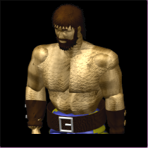
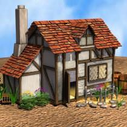
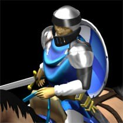
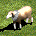
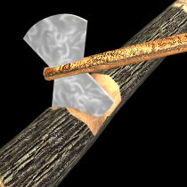
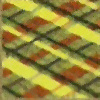
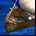

Standard coastal opening
The standard coastal opening is an easy to perform aggressive opening used in water maps. The game plan with this opening is to perform a safe but aggressive pass to feudal age an attack there with ships.
Development
| Population counter | Action | |
|---|---|---|
4 |
Enqueue villagers in your urban center |
 |
4 |
Send two villagers to build one house |
 |
4 |
Send one villager to build one house |
|
4 |
Use you scout to find your sheep and boars |
 |
5-7 |
Send all the villagers villagers to gather from sheep |
 |
8-11 |
Send the villagers to build a lumber camp and gather wood |
 |
12 |
Send the villager to lure boar |
|
12 |
Research loom |
 |
13 |
Send the villager to build one house |
|
14 |
Send the villager to gather wood near the first lumber camp created |
|
14 |
When the house has been built, send the villager to build a dock |
|
15 |
Send the villager to lure boar |
|
15-17 |
Send the villagers to gather food from sheep or boar |
|
17 |
Enqueue four fishing ships in your dock |
 |
17 |
When the dock has been built, send the villager to build a house |
|
17-20 |
Send the villagers to gather food from sheep or boar |
|
20 |
When the house has been built, send the villager to build a house |
|
20-26 |
Send the villagers to gather food from sheep or boar |
|
26 |
Pass to feudal age |
|
26 |
Send four villagers that are gathering from sheep or boar to build a miner camp and gather gold |
|
26 |
Send all the villagers that are gathering from sheep or boar to build a lumber camp and gather wood |